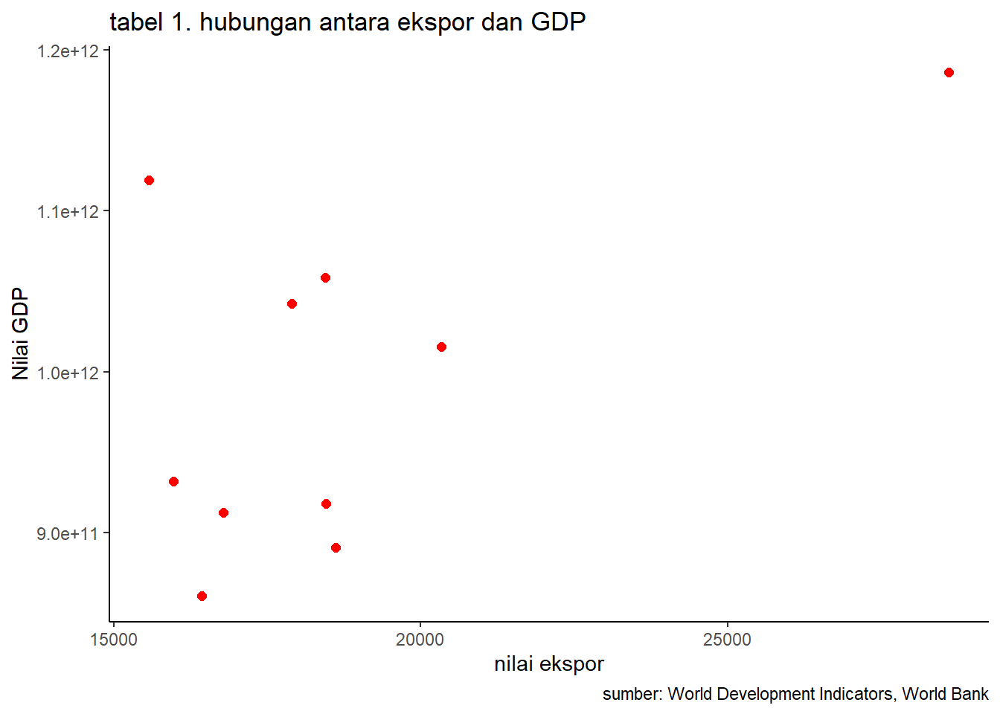

library(tidyverse)
library(readxl)
library(writexl)Pengaruh ekspor minyak kelapa sawit terhadap pertumbuhan GDP Indonesia selama 10 tahun terakhir (2012-2021)
Metode Penelitian Politeknik APP Jakarta

1 Pendahuluan
1.1 Latar belakang
Perdagangan Internasional adalah salah satu hal yang berpengaruh bagi pertumbuhan ekonomi Indonesia. Indonesia sangat unggul di Ekspor dalam sektor pertanian, hal ini yang mempengaruhi pendapatan nasional.Jika pendapatan nasional terus bertambah maka pertumbuhan ekonomi akan ikut tumbuh dan penduduk Indonesia akan sejahtera. salah satu komoditas unggulannya yaitu minyak kelapa sawit atau biasa disebut Crude Palm Oil (CPO). Minyak kelapa sawit merupakan komoditas terkemuka yang memainkan peran penting bagi perekonomian indonesia pada valuta asing dan memperbesar pangsa pasar. GDP adalah salah satu indikator untuk melihat kemajuan perekonomian suatu negara. kali ini kita akan membahas seberapa pengaruh ekspor minyak kelapa sawit yang merupakan produk unggulan dari Indonesia terhadap pertumbuhan GDP Indonesia .
1.2 Ruang lingkup
Pembahasan yang digunakan dalam penelitian ini adalah banyaknya jumlah ekspor minyak kelapa sawit Indonesia selama periode tahun 2012-2021. Data ini didapatkan dari BPS. Yang nantinya akan dibandingankan dengan data jumlah GDP Indonesia dalam perode tahun yang sama. Data GDP yang berasal dari World Trade Bank.
1.3 Rumusan masalah
Rumusan masalah dari penilitian ini adalah sebagai berikut:
- Bagaimana pengaruh ekspor minyak kelapa sawit tehadap GDP Indonsia tahun 2012-2021
- Bagaimana keterkatian ekspor minyak kelapa sawit dan GDP indonesia
1.4 Tujuan dan manfaat penelitian
tujuan dari dilakukanya penelitian ini adalah untuk mengetahui seberapa berpengaruhnya ekspor minyak kelapa sawit terhadap pertumbuhan GDP Indonesia dari tahun 2012-2021. penelitian ini juga bertujuan untuk kita mengetahui bahwa ekspor minyak kelapa sawit sangat meimiliki nilai yang baik untuk dijadikan komoditi ini sebagai produk unggulan ekspor Indonesia dan juga agar dapat semakin bertambah dan semakin maksimal pemerintah dalam menerapkan strategi untuk melakakukan ekspor komoditi tersebut. agar semakin baik pula pertumbuhannya terhadap pertumbuhan GDP Indonesia.manfaat untuk pembaca adalah untuk menambah pengetahuan terhadap ekspor minyak kelapa sawit dan juga pertumbuhan GDP Indonesia.
1.5 Package
Ini tidak wajib ada di packages yang digunakan antara lain sebagai berikut:
2 Studi pustaka
2.1 Teori Ekspor Menurut Amir M.S. (2009;1) , Ekspor adalah mengeluarkan barang dari peredaran dalam masyarakat dan mengirimkan ke luar negeri sesuai ketentuan pemerintah dan mengharapkan pembayaran dalam valuta asing.
2.2 Teori Minyak Kelapa Sawit Menurut Prof. Dr. Ir. Posman sibuea (minyak kelapa sawit, 2014) menerangkan bahwa minyak kelapa sawit berasal dari tumbuhan kelapa sawit (elais quineensis jacq). Merupakan tumbuhan tropis golongan palma yang termasuk tanaman tahunan dan habitatnya asli adalah daerah semak belukar. Kelapa sawit yang telah dibudidayakan terdiri dari dua jenis : E. guineensis dan E oleifera. Jenis pertama adalah yang pertama kali dibudidayakan sebagai tanaman komersia. Sementara E. oleisfera belakangan ini mulai dibudidayakan untuk menambah keanekaragaman sumberdaya genetic.
2.3 Teori GDP Dikutip dari e-Modul Ekonomi Kemdikbud oleh Tri Ismiyati, pengertian GDP adalah nilai barang atau jasa suatu negara, yang dihasilkan oleh faktor-faktor produksi milik warga negara dan warga negara asing yang tinggal di negara tersebut.
3 Metode penelitian
3.1 Data
| Tahun | Ekspor Minyak Kelapa Sawit (US$) | GDP Indonesia |
|---|---|---|
| 2012 | 18461.5 | 917869910105.749 |
| 2013 | 16787.5 | 912524136718.018 |
| 2014 | 18615 | 890814755233.225 |
| 2015 | 16427 | 860854235065.079 |
| 2016 | 15966.4 | 931877364177.742 |
| 2017 | 20340.856130415 | 1015618742565.81 |
| 2018 | 17898.8 | 1042271531011.99 |
| 2019 | 15574.4 | 1119099868265.25 |
| 2020 | 18444 | 1058688935454.78 |
| 2021 | 28606 | 1186092991320.04 |
penelitian ini menggunakan data BPS dan WTD
dat<-read_excel('DataLong.xlsx')
ggplot(data=dat,aes(x=Ekspor,y=GDP)) +
geom_point(color="red",size=2) + # setiap nambah command, selalu kasih tanda +
labs(title="tabel 1. hubungan antara ekspor dan GDP",
x="nilai ekspor",
y="Nilai GDP",
caption = "sumber: World Development Indicators, World Bank") +
theme_classic()
3.2 Metode analisis
Metode yang dipilih adalah regresi univariat atau Ordinary Least Square (OLS) dengan 1 variabel independen. Penelitian ini merbaksud mencari hubungan antara ekspor dan GDP. Spesifikasi yang dilakukan adalah:
\[ y_{t}=\beta_0 + \beta_1 x_t+\mu_t \] di mana \(y_t\) adalah hwy dan \(x_t\) adalah cty.
4 Pembahasan
4.1 Pembahasan masalah
Pada laporan ini Penelitian yang digunakan yaitu OLS dengan menggunakan data Ekspor Minyak Kelapa Sawit dan GDP Indonesia dengan periode tahun 2012-2021, oleh karena berikut ini adalah data yang ditampilkan divisualisasikan:
4.2 Analisis masalah
Hasil regresinya adalah
reg<-lm(GDP~Ekspor,data =dat)
summary(reg)
Call:
lm(formula = GDP ~ Ekspor, data = dat)
Residuals:
Min 1Q Median 3Q Max
-1.011e+11 -6.578e+10 -1.043e+10 5.331e+10 1.783e+11
Coefficients:
Estimate Std. Error t value Pr(>|t|)
(Intercept) 6.788e+11 1.555e+11 4.364 0.0024 **
Ekspor 1.682e+07 8.165e+06 2.060 0.0733 .
---
Signif. codes: 0 '***' 0.001 '**' 0.01 '*' 0.05 '.' 0.1 ' ' 1
Residual standard error: 9.225e+10 on 8 degrees of freedom
Multiple R-squared: 0.3467, Adjusted R-squared: 0.265
F-statistic: 4.245 on 1 and 8 DF, p-value: 0.07333Dapat dilihat dari tabel di atas bahwa ini bukan regresi AR(1).
library(tidyverse)
library(readxl)
reg<-lm(GDP~Ekspor,data =dat)
summary(reg)
Call:
lm(formula = GDP ~ Ekspor, data = dat)
Residuals:
Min 1Q Median 3Q Max
-1.011e+11 -6.578e+10 -1.043e+10 5.331e+10 1.783e+11
Coefficients:
Estimate Std. Error t value Pr(>|t|)
(Intercept) 6.788e+11 1.555e+11 4.364 0.0024 **
Ekspor 1.682e+07 8.165e+06 2.060 0.0733 .
---
Signif. codes: 0 '***' 0.001 '**' 0.01 '*' 0.05 '.' 0.1 ' ' 1
Residual standard error: 9.225e+10 on 8 degrees of freedom
Multiple R-squared: 0.3467, Adjusted R-squared: 0.265
F-statistic: 4.245 on 1 and 8 DF, p-value: 0.073335 Kesimpulan
Berdasarkan hasil regresi diatas dapat dilihat bahwa setiap nilai ekspor minyak kelapa sawit yang dilakukan akan meningkatkan hasil GDP Indonesia sebesar 1.682e+07 atau senilai (16,820,000 USD). Jadi dapat disimpulkan bahwa ekspor minyak kelapa sawit sangat berpengaruh terhadap hasil nilai GDP Indonesia.
6 Referensi
Arianti, J., Siahaan, R. L., & Sihaloho, L. (2017). Pengaruh Ekspor Minyak Kelapa Sawit/Crude Palm Oil (CPO) Terhadap Pertumbuhan Ekonomi Di Indonesia Pasca Reformasi (1998-2015).
Ewaldo, E. (2015). Analisis ekspor minyak kelapa sawit di Indonesia. E-Journal Perdagangan Industri Dan Moneter, 3(1), Art. 1. https://doi.org/10.22437/pim.v3i1.3988
Meningkatkan Ekspor Sawit untuk Ekonomi Indonesia. (2021, Juli 15). investor.id. https://investor.id/opinion/255622/meningkatkan-ekspor-sawit-untuk-ekonomi-indonesia